유통관리사-2급 (2015-05-10 기출문제)
1과목: 유통물류일반
1. 기업의 단기 자금조달 방식으로 옳지 않은 것은?
- 채권발행
- 기업 간 신용
- 약속어음
- 팩토링
- 기업어음
(정답률: 42%)

2. 산업통상자원부장관은 유통산업의 발전을 위하여 유통산업발전의 기본방향 등이 포함된 유통산업발전기본계획을 5년마다 수립하고, 이 기본계획에 따라 매년 시행계획을 세워야 한다. 계획과 시행계획에 포함되는 내용으로 가장 옳지 않은 것은?
- 유통산업의 국내외 여건 변화 전망
- 유통산업의 지역별·종류별 발전 방안
- 대규모점포와 전통시장 사이의 건전한 상거래질서의 유지 방안
- 중소유통기업의 구조개선 및 경쟁력 강화 방안
- 유통전문인력·부지 및 시설 등의 수급(需給) 변화에 대한 전망
(정답률: 43%)
3. 유통기업이 글로벌화 전략을 추구할 경우, 시장 거래, 중간적 거래, 위계적 거래의 세 가지 조직적 측면에서 대안이 있다. 조직적 측면의 대안 중 성격이 다른 하나는 무엇인가?
- 인수
- 합작투자
- 지분제휴
- 비지분제휴
- 라이센싱
(정답률: 55%)
4. 제조업자가 유통경로 구성원에 대한 성과를 평가할 경우, 평가의 자료 범위와 이에 미치는 영향요인에 관한 기술 중 가장 옳지 않은 것은?
- 선택적 유통을 하는 제조업자는 종합적인 성과를 평가할 수 있는 넓은 범위의 자료를 제공받을 수 있다.
- 제품이 복잡할수록 평가의 범위가 넓어질 것이다.
- 제품시장점유율이 낮은 제조업자는 경로구성원들에 대한 종합적인 성과평가를 실시하기가 쉽다.
- 중간상을 통해서 모든 제품을 판매하는 제조업자는 매우 포괄적인 평가를 상세히 할 것이다.
- 경로 구성원에 대한 제조업자의 통제 정도가 높으면 통합적인 평가를 수행할 수 있다.
(정답률: 56%)
5. 전자상거래 및 통신판매 등에 의한 재화 또는 용역의 공정한 거래에 관한 사항을 규정함으로써 소비자의 권익을 보호하고 시장의 신뢰도를 높여 국민경제의 건전한 발전에 이바지함을 목적으로 하는 법은?
- 전자문서 및 전자거래기본법
- 할부거래에 관한 법률
- 전자상거래 등에서의 소비자보호에 관한 법률
- 유통산업발전법
- 전통시장 및 상점가 육성을 위한 특별법
(정답률: 79%)
6. ( )안에 들어갈 용어로 옳은 것은?
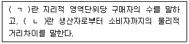
- ㄱ : 시장밀도(market density)
ㄴ : 시장크기(market size) - ㄱ : 시장크기(market size)
ㄴ : 시장지리(market geography) - ㄱ : 시장지리(market geography)
ㄴ : 시장밀도(market density) - ㄱ : 시장밀도(market density)
ㄴ : 시장지리(market geography) - ㄱ : 시장크기(market size)
ㄴ : 시장밀도(market density)
(정답률: 56%)
7. 다음의 자료를 토대로 계산한 경제적주문량(EOQ)이 200상자라면 연간 단위당 재고유지 비용은 얼마인가?
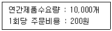
- 100
- 200
- 300
- 400
- 500
(정답률: 43%)
8. 소매업 경영측면에서 '무엇을 팔 것인가' 를 고민하는 업종중심적 점포에서 '어떻게 팔 것인가' 를 고민하는 업태 중심적 점포로 변화하는 현상에 관련된 설명으로 가장 옳지 않은 것은?
- 상품을 보는 관점이 생산자 측면에서 소비자 측면으로 변화하는 것이다.
- 상품의 수납 및 배포보다 새로운 생활 가치에 대한 창조 및 제안을 중시하는 것으로 변화하는 것이다.
- 제조기업으로부터 상품을 제공받고 소비자에게 전달하는 형식의 동태적인 점포에서 새로운 가치를 창조하고 제안하는 형식을 취하는 정태적인 점포로 이미지 변화를 하고 있다.
- 상품 자체가 지니고 있는 가치보다 소비자의 요구와 기호를 중시하는 것으로 변화하는 것이다.
- 일정한 상태로 머물러 있기보다 시장의 변동에 능동적으로 대응하는 것으로 변화하는 것이다.
(정답률: 74%)
9. 소매업체의 가격전략 중 고저(high-low) 가격결정 전략에 대한 설명으로 가장 옳지 않은 것은?
- 광고와 운영비를 절감할 수 있다.
- 가격차별화를 통해 수익이 증가할 수 있다.
- 가격에 민감한 고객을 유인할 수 있다.
- 낮은 가격 제공과 함께 시연, 경품 제공 등을 실시하기도 한다.
- 지불능력이 많은 고객에게는 상대적으로 높은 가격에 판매할 수 있다.
(정답률: 50%)
10. 소매업체에서 사용하는 성과척도 중 상품관리와 관련된 지표로 옳지 않은 것은?
- 재고수준
- 광고비
- 순매출액
- 점포면적
- 재고회전
(정답률: 47%)
11. 소매업체들이 해외 시장으로 진입하는 방식에 대한 설명으로 가장 옳지 않은 것은?
- 직접투자의 경우 높은 수준의 투자를 요구하지만 높은 잠재적 수익을 가진다.
- 전략적 제휴는 독립 기업들 사이의 공동관계를 말한다.
- 합작투자의 경우 진입하는 소매업체는 그 지역 현지 소매업체와 자원을 공동으로 이용하게 된다.
- 프랜차이즈의 경우 위험은 낮으나 높은 투자를 요구하기에 이익실현성이 감소한다.
- 직접투자의 경우 소매업체가 운영에 대한 완전한 통제권을 가진다.
(정답률: 53%)
12. 유통은 상류(상적물류)와 물류(물적유통)로 분류되는데 이에 대한 설명으로 가장 옳지 않은 것은?
- 상류는 매매계약 등의 거래의 흐름을 의미하고 물류는 물자의 흐름을 의미한다.
- 물류는 상류의 파생기능을 수행한다.
- 상류와 물류는 고도의 긴밀한 협력관계를 필요로 하고, 상호보완적인 관계이므로 원활한 커뮤니케이션을 요한다.
- 물류합리화의 일환으로 상류와 물류의 분리운영이 제시되고 있다.
- 상물분리는 배송센터나 공장에서 하고 있던 물류활동을 지점이나 영업소에서 집중적으로 수행하는 것을 말한다.
(정답률: 60%)
13. A소매업체는 전국에 200여개의 점포에서 B공급업체의 상품을 판매하고 있는데, 이 상품이 잘 팔리지 않아 진열대에서 제거할지 말지 고민하고 있다. 그리고 B공급업체와 경쟁관계에 있는 C공급업체가 A소매업체의 점포에 상품공급을 원하는 상황이다. 이런 경우, A소매업체가 C공급업체의 입점욕구를 수용하는 동시에 잘 팔리지 않은 B공급업체의 상품을 C공급업체를 통해서 일시에 해결할 수 있는 방법은?
- 입점비(slotting allowances)
- 역청구(chargebacks)
- 거래거절(refusals to deal)
- 역매입(buybacks)
- 구속적 계약(tying contracts)
(정답률: 53%)
14. 창고관리시스템 (WMS : Warehouse Management System)에 대한 설명으로 가장 옳지 않은 것은?
- WMS는 창고내의 재고관리를 비롯하여 발주, 입고, 피킹(picking) 등의 물류활동에 관한 정보를 실시간으로 획득하여 신속한 의사결정을 내릴 수 있도록 하는 시스템이다.
- WMS는 화물의 입출고관리, 재고관리, 보관위치관리, 출고지시, DPS(Digital Picking System), DAS(Digital Assort System) 등으로 구성된다.
- WMS는 정확한 재고관리, 정확하고 효율적인 피킹작업, 보관의 효율화, 정확한 포장작업 및 효율성향상 등을 목적으로 한다.
- WMS의 보관위치관리방식 중 고정위치(fixed location)관리는 지정된 랙이나 구역에 지정된 상품만 보관하는 방법으로서, 해당구역에는 항상 상이한 상품이 보관된다.
- WMS의 DPS(Digital Picking System)는 랙이나 보관 장소에 설치된 점등장치를 통해 물품의 보관구역을 알려주고 출고물품이 몇 개인지 알려주는 시스템이다.
(정답률: 69%)
15. 물류와 고객서비스에 대한 내용으로 가장 옳지 않은 것은?
- 재고수준이 낮아지면 고객서비스가 좋아지므로 서비스 수준의 향상과 추가재고 보유비용의 관계가 적절한지 고려해야 한다.
- 주문을 받아 물품을 인도할 때까지의 시간을 리드타임이라고 한다면 리드타임은 수주, 주문처리, 물품준비, 발송, 인도시간으로 구성된다.
- 리드타임이 길면 구매자는 그동안의 수요에 대비하기 위해 보유재고를 늘리게 되므로 구매자의 재고비용이 증가한다.
- 효율적 물류관리를 위해 비용의 상충(trade-off)관계를 분석하고 최상의 물류서비스를 선택할 수 있어야 한다.
- 동등수준의 서비스를 제공할 수 있는 대안이 여럿있을 때 그 중 비용이 최저인 것을 선택하는 것이 물류관리의 과제 중 하나이다.
(정답률: 58%)
16. ( )안에 들어갈 용어를 순서대로 올바르게 나열한 것은?
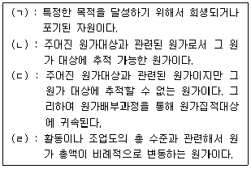
- ㄱ: 원가, ㄴ: 간접원가, ㄷ: 직접원가, ㄹ: 변동원가
- ㄱ: 원가, ㄴ: 직접원가, ㄷ: 간접원가, ㄹ: 변동원가
- ㄱ: 원가, ㄴ: 고정원가, ㄷ: 간접원가, ㄹ: 직접원가
- ㄱ: 가격, ㄴ: 고정원가, ㄷ: 비추적원가, ㄹ: 비례원가
- ㄱ: 가격, ㄴ: 추정원가, ㄷ: 비추적원가, ㄹ: 비례원가
(정답률: 60%)
17. ( ) 안에 들어갈 용어를 순서대로 올바르게 나열한 것은?
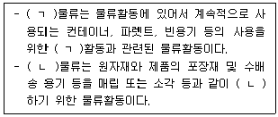
- ㄱ : 반품, ㄴ : 조달
- ㄱ : 회수, ㄴ : 생산
- ㄱ : 반품, ㄴ : 회수
- ㄱ : 회수, ㄴ : 판매
- ㄱ : 회수, ㄴ : 폐기
(정답률: 80%)
18. 정량주문법과 정기주문법에 대한 설명으로 옳지 않은 것은?
- 수량할인을 기대하기 힘들 때는 정기주문법이 합당하다.
- 계절에 따라 수요의 변동폭이 클 때는 정기주문법이 합당하다.
- 재고수준을 자동적으로 유지하지 못할 때는 정량주문법이 합당하다.
- 용도의 공통성이 높고 사용빈도가 많으며 매일 일정한 비율로 소비되는 물품인 경우에 정량주문법이 합당하다.
- 경제적 재주문점을 계산하기가 용이하고 이를 활용하는 것이 재고관리에 더욱 유리할 때는 정량주문법이 합당하다.
(정답률: 41%)
19. 아래 내용은 무엇에 대한 설명인가?
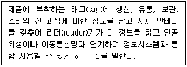
- Bar code
- POS(Point of Sale) system
- KAN(Korean Article Number)
- EDI(Electronic Data Interchange)
- RFID(Radio Frequency Identification)
(정답률: 57%)
20. 물류는 고객서비스와 직결된다. 고객서비스는 거래전 요소, 실제거래 요소, 사후적 거래 요소로 나누어진다. 다음 중 고객서비스의 사후적 거래요소에 속하는 것은?
- 설치, 보증, 수리
- 시스템의 정확성
- 명문화된 고객서비스 정책
- 주문의 편리성
- 신속한 선적
(정답률: 74%)
21. 단위적재시스템(Unit Load System)의 단점에 해당하는 것은?
- 하역인력이 늘어난다.
- 넓은 통로를 갖춘 큰 창고가 필요하다.
- 작업의 표준화, 규격화가 어렵다.
- 검수가 용이하지 않다.
- 하역시간이 길어진다.
(정답률: 60%)
22. 머천다이징을 가격 중심과 비가격 중심으로 나누었을 때, 비가격 중심의 머천다이징 특징을 설명한 것으로 옳은 것은?
- 투자삭감, 원가절감을 중요시 한다.
- 재고관리, 유통비용 분야의 비용을 절감하고자 한다.
- 인스토아 머천다이징 등을 강조한다.
- 할인점, 카테고리킬러 등의 기본 머천다이징이다.
- CRM보다는 SCM을 더욱 중요시한다.
(정답률: 58%)
23. QR(Quick Response)시스템에 대한 내용으로 옳지 않은 것은?
- SCM보다는 주로 CRM과 연계되어 있다.
- EAN, POS, EDI 등의 정보기술을 활용한다.
- 섬유, 의류산업에서 활용되고 있다.
- 생산업체와 유통업체의 유기적인 상호협력이 필요하다.
- 제품 공급사슬상의 효율성 극대화 및 소비자 만족 극대화를 위한 것이다.
(정답률: 67%)
24. 아래 박스안의 채찍효과를 극복하는 방법으로 옳은 것은?
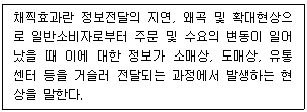
- 잦은 가격정책의 변화
- 대량 일괄 주문
- 유통주체간의 독립성 강화
- 공급사슬상의 수요 및 재고정보 공유
- 각 유통단계별 개별적 수요예측
(정답률: 74%)
25. 아래에서 설명하는 이론은 무엇인가?
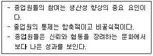
- X이론
- Y이론
- Z이론
- W이론
- 강화이론
(정답률: 47%)
2과목: 상권분석
26. 상권분석에 이용할 수 있는 회귀분석 모형에 관한 설명으로 가장 옳지 않은 것은?
- 소매점포의 성과에 영향을 미치는 요소들을 파악하는데 도움이 된다.
- 모형에 포함되는 독립변수들은 서로 상관성이 높아야 좋다.
- 성과에 영향을 미치는 영향변수에는 점포특성과 상권내 경쟁수준 등이 포함될 수 있다.
- 성과에 영향을 미치는 영향변수에는 상권내 소비자들의 특성이 포함될 수 있다.
- 회귀분석에서는 표본의 수가 충분하게 확보되어야 한다.
(정답률: 60%)
27. 아파트단지내 상가의 특성을 설명한 것으로 옳지 않은 것은?
- 일정한 고정고객을 확보하여 꾸준한 매출이 가능하다는 장점이 있다.
- 단지의 세대수가 수요의 크기에 영향을 미친다.
- 주부의 가사부담을 덜어줄 수 있는 아이템이 유리하다.
- 일반적으로 외부고객을 유입하기 어려워 상권의 한정성을 갖는다.
- 일반적으로 대형, 중형, 소형순으로 평형이 클수록 상가 활성화에 더 유리하다.
(정답률: 59%)
28. 신규점포 또는 기존점포에 대한 상권분석의 장점으로 옳지 않은 것은?
- 소비자의 인구통계학적 특성들을 파악하여 소매전략 수립에 도움을 준다.
- 상권내 소비자를 상대로 하는 촉진활동의 초점이 명확해 질 수 있다.
- 기존 점포의 이전(이동)이나 규모변경(면적확대, 면적축소)으로 인한 매출변화를 예측할 수 있다.
- 공급체인관리(SCM)를 개선하여 물류비용을 절감할 수 있는 정보를 얻을 수 있다.
- 해당 지역에서 특정 체인 소매업자에 의해 운영될 수 있는 적절한 점포 수를 파악할 수 있다.
(정답률: 43%)
29. 시장확장잠재력을 평가하는 모형에 대한 설명으로 가장 옳지 않은 것은?
- 시장이 미래에 신규수요를 창출할 수 있는 잠재력을 반영하는 지표이다.
- 소매포화지수의 부족함을 보완하여 시장의 상태를 보다 명확하게 판단할 수 있다.
- 소매포화지수가 높고 시장확장잠재력이 낮으면 미래에 매우 매력적인 시장이 된다.
- 지역 내 고객의 다른 시장 지출액을 활용하면 우리시장의 잠재력을 확인할 수 있다.
- 소매포화지수와 시장확장잠재력이 모두 낮으면 신규점포의 진출을 고려하지 않는다.
(정답률: 64%)
30. 실무적인 관점에서 볼 때 상권분석의 목적으로 옳지 않은 것은?
- 임대료 평가 기준 마련
- 지역내 가구수 파악
- 매출추정의 근거 확보
- 업종 선택의 기준 마련
- 마케팅 전략 수립에 활용
(정답률: 53%)
31. 기존 점포 상권의 공간적 범위를 파악하기 위해 고객이나 거주자들로부터 자료를 수집하여 분석하는 조사기법과 관련성이 가장 먼 것은?
- 점두조사
- 내점객조사
- 지역표본추출조사
- 체크리스트법
- CST(Customer Spotting Technique) map
(정답률: 52%)
32. 입지를 선정하기 위한 기준을 설명하고 있는 내용으로 옳지 않은 것은?
- 입지는 장기적으로 재원을 투자해야 하므로 인구의 증가, 고용률 등을 분석하게 된다.
- 소매입지분석은 잠재적 성장률이 향후 수요와 점포판매에 미치는 영향을 분석한다.
- 다른 기업과의 경쟁정도는 입지선정에 있어 중요한 요소이다.
- 인구의 수준, 성장, 경쟁 중 한 가지만 명확히 분석하면 합리적인 해당 상권정의가 가능하다.
- 점포의 운영비용은 지역의 특성, 경쟁점포의 존재, 규제 등에 의해 영향을 받는다.
(정답률: 62%)
33. 아래의 상권분석 모델 중에 다수의 상업시설 이용 시 상업시설의 규모와 상업시설까지 걸리는 시간거리를 중심으로 상업시설의 흡인력을 계산하는 모델은?
- 레일리(Reilly) 모델
- 컨버스(Converse) 모델
- 허프(Huff) 모델
- 회귀분석 모델
- 쉐어(Share) 법
(정답률: 43%)
34. 식당이 많이 몰려있는 곳에 술집이나 커피숍들이 있다든지, 극장가 주위에 식당들이 많이 밀집해 있는 것은 다음 중 어느 입지원칙이 적용된 것이라 할 수 있는가?
- 접근가능성 원칙
- 점포밀집 원칙
- 보충가능성 원칙
- 동반유인 원칙
- 고객차단 원칙
(정답률: 49%)
35. 소규모 소매점포의 상권단절요인에 일반적으로 해당하지 않는 것은?
- 폭 100m의 하천
- 왕복 2차선 도로
- 운동장만 있는 체육공원
- 담으로 둘러싸인 공장
- 지상을 지나는 철도
(정답률: 54%)
36. 넬슨(Nelson)의 입지선정 원칙에서 서로 보완관계에 있는 점포가 인접해 고객의 흡인력을 높일 수 있는 가능성과 동종 상품을 취급하는 점포 등 유사한 점포들이 인접되어 있는 경우 소비자에 대한 흡인력을 극대화할 수 있는 가능성을 순서대로 나열한 것은?
- 누적적 흡인력, 경쟁 회피성
- 경쟁 회피성, 접근 가능성
- 양립성, 누적적 흡인력
- 접근 가능성, 경쟁 회피성
- 누적적 흡인력, 양립성
(정답률: 53%)
37. Christaller의 중심지이론에서 그 이론을 전개하기 위해 제시한 전제조건으로 옳지 않은 것은?
- 소비자는 자신의 수요를 충족시키기 위해 최근린(最近隣)의 중심지를 찾는다.
- 모든 방향에서 교통의 편리한 정도가 동일하다.
- 중심지는 그 배후에 행정, 서비스 기능을 수행하기 위해 고지대에 입지한다.
- 평야지대에 인구가 균등하게 분포되어 있다.
- 운송비는 거리에 비례하고 운송수단은 동일하다.
(정답률: 55%)
38. 레일리(Reilly)의 소매인력법칙과 관련한 설명으로 옳지 않은 것은?
- 뉴턴(Newton)의 중력법칙을 상권분석에 활용한 것이다.
- 도시규모가 클수록 주변의 소비자를 흡인하는 매력도가 커진다고 가정한다.
- 쇼핑시 주변도시의 매력도는 이동거리의 제곱에 반비례한다고 가정한다.
- 광역상권의 경쟁상황에서 쇼핑센터의 매출액 추정에도 활용할 수 있다.
- 거리, 인구 뿐만 아니라 매장면적, 가격 등 최소한의 변수를 활용할 수 있다.
(정답률: 46%)
39. 유동인구 조사를 통해 유리한 입지조건을 찾을 때 적합하지 않은 것은?
- 교통시설로부터의 쇼핑동선이나 생활동선을 파악한다.
- 주중 또는 주말 중 조사의 편의성을 감안하여 선택적으로 조사한다.
- 조사시간은 영업시간대를 고려하여 설정한다.
- 유동인구의 수보다 인구특성과 이동방향 및 목적 등이 더 중요할 수도 있다.
- 같은 수의 유동인구라면 일반적으로 출근동선보다 퇴근동선에 위치하면 유리하다.
(정답률: 64%)
40. 「유통산업발전법」에서는 대형점포 등과 중소유통업의 상생발전을 위하여 필요하다고 인정하는 경우, 대형마트 등에 대한 영업시간 제한이나 의무휴업일 지정을 규정하고 있다. 그 내용과 상관없는 것은?
- 시장·군수·구청장 등은 오전 0시부터 오전 10시까지의 범위에서 영업시간을 제한할 수 있다.
- 시장·군수·구청장 등은 매월 이틀을 의무휴업일로 지정하여야 한다.
- 동일 상권내에 전통시장이 존재하지 않는 경우에는 위의 내용이 적용되지 아니한다.
- 영업시간 제한 및 의무휴업일 지정에 필요한 사항은 해당 지방자치단체의 조례로 정한다.
- 의무휴업일은 공휴일 중에서 지정하되, 이해당사자와 합의를 거쳐 공휴일이 아닌 날을 의무휴업일로 지정할 수 있다.
(정답률: 50%)
41. Huff모형, MNL모형 등 공간상호작용모델에 관한 설명으로 가장 옳지 않은 것은?
- 공간상호작용이란 개념은 지리학분야에서 유래되었다.
- 공간상의 지점들 간 모든 종류(사람, 물품, 돈 등)의 흐름을 공간상호작용이라 한다.
- 통행거리 등 영향변수의 민감도계수는 상황에 따라 변화하지 않는다.
- 소비자에게 인지되는 효용이 클수록 그 점포가 선택될 가능성이 커진다.
- 소비자의 점포선택행동을 확률적 현상으로 인식한다.
(정답률: 61%)
42. A와 B라는 두 쇼핑센터가 있다고 가정하고 각 쇼핑센터에 대한 정보는 다음 상자 안의 내용과 같을 때, 잠재매출이 더 큰 쇼핑센터와 그 쇼핑센터의 잠재매출액으로 올바르게 나열된 것은?
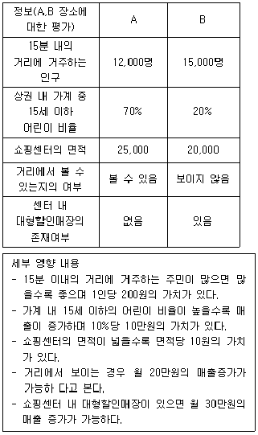
- A쇼핑센터, 355만원
- A쇼핑센터, 985만원
- B쇼핑센터, 370만원
- B쇼핑센터, 550만원
- 동일한 잠재매출액이 계산된다. A, B 모두 동일하다.
(정답률: 47%)
43. 점포의 신축을 계획하고 있다. 대지면적이 100m2인 곳에 바닥면적이 70m2인 건물을 지하 1층, 지상 3층으로 짓고 1층 전체를 주차장으로 만들었다고 하면 이 건물의 용적률은?
- 100%
- 140%
- 210%
- 280%
- 300%
(정답률: 44%)
44. 두 개 이상의 점포를 운영하는 경우 소매점포 네트워크의 설계, 신규점포 개설시 기존 네트워크에 대한 영향분석, 기존점포의 재입지 또는 폐점 의사결정 등의 상황에서 유용하게 활용될 수 있는 분석방법은?
- 입지배정모형
- 회귀분석모형
- 레일리모형
- MCI모형
- 시장점유율모형
(정답률: 41%)
45. 여러 입지의 유형과 특성에 대한 설명으로 옳지 않은 것은?
- 적응형입지 - 거리에서 통행하는 유동인구에 의해 영업이 좌우됨
- 목적형입지 - 고객이 특정한 목적을 갖고 방문함
- 생활형입지 - 지역 주민들이 주로 이용함
- 산재성입지 - 동일 업종끼리 모여 있으면 불리함
- 집재성입지 - 배후지의 중심지에 위치하는 것이 유리함
(정답률: 55%)
3과목: 유통마케팅
46. 유통경로구조를 결정하는 요인에 대한 설명으로 옳지 않은 것은?
- 제품이 무겁고 부피가 크면 직접경로가 유리하다.
- 제품의 단위가치가 낮을수록 유통경로는 길어진다.
- 도입단계의 신제품일수록 경로길이는 길어진다.
- 제품이 표준화될수록 경로길이는 길어진다.
- 자사의 재무능력이 좋고, 규모가 클수록 중간상에게 덜 의존하게 된다.
(정답률: 33%)
47. 고객관계관리(Customer Relationship Management) 프로그램을 구축하고 고객을 유지하기 위해 소매업체들이 사용하는 방법으로 가장 옳지 않은 것은?
- 촉진지원금
- 다빈도 구매자 프로그램
- 고객 우대서비스
- 개인화
- 커뮤니티
(정답률: 38%)
48. 오픈 가격제(open pricing)에 대한 설명으로 옳지 않은 것은?
- 제조업자는 출하가격만을 제시하고 소매업체가 자율적으로 가격을 결정한다.
- 실제 판매가보다 부풀려 소비자가격을 표시한 뒤 할인해 주는 할인판매의 폐단을 근절시키기 위해 도입된 것이다.
- 유통업체간의 경쟁을 촉진시켜 상품가격을 전반적으로 낮추는 효과를 달성하고자 하는 것이다.
- 가격파괴 유통업태의 등장으로 인해 판매가격을 상승시키는 요인이 되었다.
- 과자, 라면, 아이스크림 등과 같은 편의품 또한 오픈 가격제 품목에 해당된다.
(정답률: 53%)
49. 아래의 내용은 경로성과 평가기준 중 무엇을 설명하는 것인가?
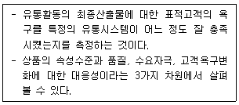
- 시스템의 효과성(system effectiveness)
- 시스템의 공평성(system equity)
- 시스템의 생산성(system productivity)
- 시스템의 수익성(system profitability)
- 시스템의 안전성(system security)
(정답률: 65%)
50. 브랜드에 대한 설명으로 옳지 않은 것은?
- 브랜드 아이덴티티는 소비자가 브랜드에 대해 갖는 전체적인 인상을 말한다.
- 브랜드 이미지는 호의적이고, 독특하고, 강력해야 한다.
- 브랜드 연상은 브랜드와 관련된 모든 이미지들의 묶음이다.
- 인지도가 높다는 것은 강력한 브랜드가 되기 위한 필요조건이지만 충분조건은 아니다.
- 브랜드 자산은 브랜드 인지도와 브랜드 이미지로 구성되어 있다.
(정답률: 25%)
51. 점포관리시 매장배치를 할 때 일반적으로 고려하는 사항으로 가장 옳지 않은 것은?
- 점포 내에서 위치의 좋고 나쁨은 층수, 매장 입구 및 에스컬레이터 위치 등에 따라 달라진다.
- 고가의 전문용품은 층의 모서리나 높은 층과 같이 통행량이 많지 않은 구역에 위치한다.
- 일부 점포들은 여러 상품들을 동시에 판매하기 위해 장바구니 분석법을 사용하여 전통적으로 구분되어 있던 매장들이나 카테고리를 함께 묶어 매장에 배치한다.
- 백화점의 향수와 같은 충동구매를 일으킬 가능성이 높은 제품은 대부분 점포 후면에 배치하는 것이 유리하다.
- 가구와 같이 넓은 바닥 면적을 필요로 하는 매장들은 일반적으로 인적이 뜸한 곳에 위치한다.
(정답률: 57%)
52. 점포의 물리적 환경이 미치는 영향으로 가장 옳지 않은 것은?
- 기업에 대한 이미지를 형성하는데 중요하다.
- 점포내에서 제공되는 서비스의 유형성 극복에 도움을 준다.
- 고객의 구매결정과 서비스경험에 영향을 준다.
- 적절한 사무공간, 온도, 공기 등은 직원의 행동에 긍정적 영향을 미친다.
- 고객의 상품탐색의 용이성과 흥미로운 구매경험에 영향을 미칠 수 있다.
(정답률: 39%)
53. 프랜차이즈 시스템의 질(system quality)은 프랜차이즈 본부가 인식하는 가맹점의 성공요인 중 하나이다. 다음 중 프랜차이즈 시스템의 질을 결정하는 변수로 가장 옳지 않은 것은?
- 종업원간의 팀웍
- 양질의 가맹점 표준
- 신속하고 친절한 서비스
- 좋은 상권
- 운영시스템의 효율성
(정답률: 45%)
54. 점포의 이미지를 측정하기 위한 설문이다. 이 설문에 사용된 척도의 유형은?
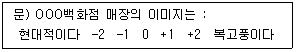
- 리커트척도
- 어의차이척도
- 총합고정척도
- 등급척도
- 스타펠척도
(정답률: 47%)
55. 마케팅 조사에서 활용되는 통계분석 기법을 설명한 내용이다. 어떤 분석기법인가?
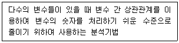
- 일원분산분석
- 판별분석
- 회귀분석
- 요인분석
- 컨조인트분석
(정답률: 26%)
56. 서비스품질에 대한 고객평가는 다양한 기준에 의해 이루어진다. 서비스품질에 대한 다차원적인 평가에 있어 가장 보편적으로 활용되고 있는 SERVQUAL의 5가지 구성요소에 해당되지 않는 것은?
- 유형성
- 신뢰성
- 수익성
- 확신성
- 공감성
(정답률: 58%)
57. 유통경로시스템의 미시적 성과를 의미 있게 평가하기 위해서는 정성적 척도와 정량적 척도를 활용할 수 있다. 다음 중 경로성과의 정량적 척도에 해당하지 않는 것은?
- 재고부족 방지비용
- 악성부채비율
- 손상된 상품비율
- 갈등수준
- 고객불평 수
(정답률: 59%)
58. 제조업체 입장에서 볼 때, 소매상과 직접 거래하는 것 보다는 도매상을 거치는 것이 교환과정에 있어 필요한 거래수의 감소를 가져온다. 만일 제조업체가 3곳, 도매상이 2곳, 소매상이 6곳일 경우 총 거래의 수는 몇 개인가?
- 7개의 거래
- 12개의 거래
- 14개의 거래
- 18개의 거래
- 20개의 거래
(정답률: 33%)
59. 가격조정 전략의 유형과 특징이 올바르게 연결되지 않은 것은?
- 세분시장별 가격결정 – 고객, 제품, 구매자에 따라 서로 다른 가격을 책정함
- 심리적 가격결정 – 심리적 효과를 얻기 위해 가격을 조정함
- 촉진 가격결정 – 단기적인 매출 증대를 목적으로 일시적으로 가격을 할인함
- 동태적 가격결정 – 특정시점에서 개별고객과 상황에 맞추어 가격을 정한 후 장기간 유지함
- 지리적 가격결정 – 고객의 지리적 입지를 고려하여 가격을 조정함
(정답률: 56%)
60. 몇 개의 제품을 결합하여 할인된 가격으로 판매하는 가격결정을 뜻하는 것은?
- 사양제품 가격결정(optional-product pricing)
- 제품라인 가격결정(product line pricing)
- 종속제품 가격결정(captive-product pricing)
- 부산물 가격결정(by-product pricing)
- 묶음제품 가격결정(product bundle pricing)
(정답률: 68%)
61. 중간상을 대상으로 하는 판촉도구에 해당하지 않는 것은?
- 협동광고
- 공제(allowance)
- 푸시 지원금(push-money)
- 광고판촉물(specialty ad items)
- 추첨(sweepstakes)
(정답률: 67%)
62. 유통업체에서 카테고리관리를 할 때, 카테고리별 재무목표를 설정하기 위하여 이익, 매출, 회전률을 결합하여 판단하여야 한다. 이와 같은 목적으로 사용하기에 가장 적합한 재무비율은?
- GMROI(gross margin return on inventory investment)
- ROA(return on assets)
- ROI(return on investment)
- EVA(economic value added)
- GMROS(gross margin return on selling space)
(정답률: 39%)
63. 편의품에 대한 설명으로 가장 옳지 않은 것은?
- 소비자들은 이 제품에 대해 구매계획을 하지 않으나 빈번한 구매행동을 보인다.
- 브랜드 대안 간 비교나 쇼핑노력을 상대적으로 적게 할 수 있다.
- 이 제품들은 주로 제조업체에 의한 대량촉진이 이루어진다.
- 생명보험, 장례서비스 등과 같은 서비스 제품은 편의품에 속한다.
- 고객이 필요로 할 때 쉽게 이용할 수 있도록 여러입지에서 취급된다.
(정답률: 63%)
64. 시각적 머천다이징(VMD)에 대한 설명으로 옳지 않은 것은?
- 점포내외부 디자인도 포함하는 개념이지만 핵심개념은 매장내 전시(display)를 중심으로 이루어진다.
- 시각적 머천다이징의 요소로는 색채, 재질, 선, 형태, 공간 등을 들 수 있다.
- 상품과 판매환경을 시각적으로 연출하고 관리하는 일련의 활동을 말한다.
- 상품의 잠재적 이윤보다는 시각적 우수성, 기획의도, 매장과의 조화가 보다 중요하다.
- 상품에 대한 정보를 제공하고 특정구매제안을 하기에 용이해야 한다.
(정답률: 47%)
65. 점포 레이아웃관리의 영역에 해당되지 않은 것은?
- 상품의 배치
- 집기의 공간 결정
- 표지(Sign)와 그래픽을 소품으로 사용
- 계산대 배치
- 통로의 공간 결정
(정답률: 61%)
66. 할인점의 CRM에 대한 설명으로 가장 옳지 않은 것은?
- 짧은 방문주기로 고객관계 형성의 기회가 많음
- 비용집행의 효율성과 효과성이 중요
- 실질적인 맞춤 고객 서비스, 반품 및 환불은 제조업체에서 실행
- 장바구니 분석을 통한 캠페인에 집중
- 단품수준의 상세분석으로 고객 라이프스타일까지 분석 가능
(정답률: 54%)
67. 텔레비전 홈쇼핑(TV Homeshopping)에 대한 설명으로 옳지 않은 것은?
- 케이블방송을 통한 홈쇼핑, 정보형 광고(informercials), 직접반응광고(direct response advertising)를 모두 일컫는다.
- 일반적으로 가격이 저렴한 염가의 상품을 판매하며 홈쇼핑 채널에 대한 소비자의 충성도가 높아서 다른 유형의 소매점들에 비해 경쟁이 약한 편이다.
- 소비자들이 소매점까지 방문하지 않고도 TV화면을 통해 제품의 특징을 확인할 수 있어, 시간절약이 가능할 뿐만 아니라 구매하지 않더라도 상품에 대한 정보를 얻을 수 있다.
- 우수 중소기업상품을 PB로 개발, 판매하는 등 중소기업의 판로개척에 도움을 주기도 한다.
- TV홈쇼핑의 큰 단점은 고객들이 원할 때 볼 수 있는 것이 아니라 상품이 제시될 때까지 기다려야 한다는 것이다.
(정답률: 56%)
68. 인터넷소매업체의 구색계획에 대한 내용으로 옳지 않은 것은?
- 고객에게 상품을 제대로 인도하는 것이 온라인거래에서 매우 중요하므로 어떻게 효율적으로 배달할 것인가와 함께 어떻게 인수, 반품받을 것인가도 함께 생각하여야 한다.
- 점포에 대한 투자는 줄일 수 있지만, 기술부문과 소량주문을 처리할 수 있는 물류에 대한 투자 등이 많이 소요된다.
- 재고투자 등에 제약이 적으므로 오프라인 소매업에 비해 높은 수준의 다양성과 구색, 상품 가용성을 제공할 수 있다.
- 오프라인 소매업과는 달리 취급품목에 대한 안전재고 수준을 높여야 한다.
- 표적 고객이 어느 정도의 전문성과 다양성을 원하는가에 대한 분석을 통해 구색을 결정해야 한다.
(정답률: 54%)
69. 아래의 빈 칸에 들어갈 용어로 올바르게 짝지어진 것은?
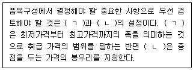
- ㄱ : 품목 레벨, ㄴ : 품종
- ㄱ : 상품군 레벨, ㄴ : 품목 레벨
- ㄱ : 프라이스 존, ㄴ : 품종
- ㄱ : 프라이스 존, ㄴ : 프라이스 라인
- ㄱ : 품목 레벨, ㄴ : 프라이스 라인
(정답률: 65%)
70. 고객에 대한 커뮤니케이션을 효과적으로 수행하기 위해서는 커뮤니케이션 구성요소들에 대한 이해가 필요하다. 커뮤니케이션 과정에서 발생하는 예기치 못했던 정보왜곡현상이나 정체현상을 무엇이라고 하는가?
- 원천효과(source effect)
- 장애물(noise)
- 피드백(feedback)
- 부호화(encoding)
- 해독(decoding)
(정답률: 57%)
4과목: 유통정보
71. 전통적 비즈니스와는 달리 인터넷상에서 나타나는 거래의 특징으로 가장 옳지 않은 것은?
- 중간상의 소멸현상이 나타난다.
- 기술적 제약이 소멸된다.
- 공급자와 소비자 간의 양방향성을 갖는다.
- 시·공간적 제약이 소멸된다.
- 소액 자본으로도 창업이 가능하다.
(정답률: 53%)
72. SCM기법의 성공적인 도입을 위한 고려사항으로 가장 옳지 않은 것은?
- 최고 경영자의 확실한 이해와 의지가 필요하다.
- 기업 내부의 정보화가 확고히 구축되어 있어야 한다.
- 공급 사슬에 연계되는 기업간에 신뢰를 바탕에 둔 업무 협조 체제가 구축되어야 한다.
- 데이터의 올바른 수집과 교환을 위해 기업간 데이터 포맷을 표준화해야 한다.
- 기업 내부와 다른 기업간의 연계를 고려해 현행프로세스를 중시해야 한다.
(정답률: 48%)
73. (가),(나),(다) 안에 들어갈 단어들이 순서대로 올바르게 짝지어진 것은?
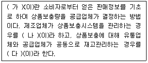
- (가) - QR, (나) - VMI, (다) - CMI
- (가) - QR, (나) - CMI, (다) - VMI
- (가) - CR, (나) - VMI, (다) - CMI
- (가) - CR, (나) - CMI, (다) - VMI
- (가) - VMI, (나) - CAO, (다) - ECR
(정답률: 29%)
74. EAN코드와 관련된 설명으로 가장 옳은 것은?
- EAN코드는 UPC코드보다 하위레벨로 EAN코드 판독기는 UPC코드도 판독가능하다.
- EAN코드의 종류에는 EAN-12 표준형과 EAN-8 단축형이 있다.
- EAN코드의 종류에 따라 제조업체코드와 상품품목코드를 표현하는 자리수가 다르다.
- EAN의 국가코드는 3자리이고 체크디지트는 2자리이다.
- 각 캐릭터는 두 개의 바와 두 개의 여백으로 형성된 5개의 모듈로 이루어져 있다.
(정답률: 40%)
75. 방화벽 구축 시 고려사항으로 가장 옳지 않은 것은?
- 방화벽의 구축 형태별 장단점을 파악한다.
- 트래픽량을 고려한다.
- 동시 사용자 수를 고려한다.
- 각 방화벽 Gateway의 종류별 장단점을 파악한다.
- 항상 속도보다는 안전성을 고려한다.
(정답률: 39%)
76. 2차원 코드에 관한 설명으로 가장 옳지 않은 것은?
- 문자, 숫자 등의 Text는 물론 그래픽, 사진, 음성, 지문, 서명 등 다양한 형태의 정보를 담을 수 있다.
- 정보의 자체복구 및 보안인증 기능이 있다.
- 높은 인식률과 신뢰성을 보증한다.
- 데이터의 처리속도가 빠르다.
- 종류에는 PDF-417코드, Code 93, Code 128 및 QR코드 등이 있다.
(정답률: 40%)
77. 유통정보시스템의 구성요소로 가장 옳지 않은 것은?
- 하드웨어(Hardware)
- 소프트웨어(Software)
- 데이터베이스(Database)
- 커뮤니티(Community)
- 운영요원
(정답률: 40%)
78. 급변하는 지식정보화사회에서 회사 조직의 글로벌(Global)경쟁력을 지속하기 위해서는 유비쿼터스(Ubiquitous) 정신이 절대적으로 필요하며, 유비쿼터스 정신은 5Any의 뜻을 가진 시공융합 정신이라 말할 수 있는데 다음 중 5Any와 가장 거리가 먼 것은?
- Anytime
- Anywhere
- Anyone
- Anyway
- Anydevice
(정답률: 40%)
79. 기업의 EDI 도입효과는 직접적인 효과, 간접적인 효과, 전략적인 효과로 구분할 수 있다. 다음 중 EDI의 전략적인 효과로 가장 옳은 것은?
- 관리의 효율성 증대
- 업무처리의 오류 감소
- 경쟁우위 확보
- 문서거래 시간의 단축
- 자료의 재입력 감소
(정답률: 40%)
80. 공개키 방식의 암호 알고리즘으로 인수분해의 난해함을 활용한 암호화 시스템으로 가장 옳은 것은?
- RC4
- RSA(Rivest Shamir Adleman)
- DES(Data Encryption Standard)
- SEED
- IDEA(International Data Encryption Algorithm)
(정답률: 41%)
81. 전자상거래 고객의 특성으로 가장 옳지 않은 것은?
- 호기심이 다양한 구매집단이다.
- 인터넷 구매에 있어서 고객들은 상당한 불안감을 갖고 있다.
- 인터넷을 통해 자유롭게 자신의 의견을 개진한다.
- 일반적 off-line 구매집단에 비해 상대적으로 구매력이 낮은 집단이다.
- 새로운 경향을 추구하는 편이다.
(정답률: 55%)
82. ( )안에 모두 들어갈 수 있는 용어는?
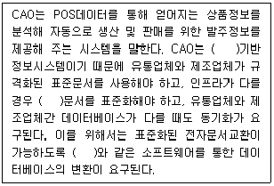
- 크로스도킹
- MRO
- EDI
- KAN
- EAN
(정답률: 54%)
83. e-procurement의 장점으로 가장 옳지 않은 것은?
- 구매처리비용을 절감할 수 있다.
- 조달업무 프로세스가 복잡화되지만 자동화시킬 수 있다.
- 구매업무 프로세스의 투명성을 확보할 수 있다.
- 구매·조달업무의 효율성을 제고시킬 수 있다.
- 기업은 공급관리 차원에서 실시간 거래, 오류감소, 인력절감 등의 효과를 누릴 수 있다.
(정답률: 56%)
84. e-SCM추구전략 중, 고객이 상품을 주문한 후 상품을 받을 수 있기를 기대하는 도착시간인 고객허용리드타임이 실제로 공급업체로부터 유통경로를 거쳐 고객에게 배달되는 총시간인 공급리드타임 보다 짧은 경우에 활용할 수 있는 전략으로 가장 옳은 것은?
- 연속 재고보충 계획 전략
- 대량 개별화 전략
- 구매자 주도 재고관리 전략
- 제3자 물류 전략
- 동시 계획 전략
(정답률: 24%)
85. 생산자 집약형 배송시스템의 특징으로 가장 옳지 않은 것은?
- 배송 물품이 다량이다.
- 배송 빈도수가 많다.
- 배송이 정기적으로 이루어진다.
- 주로 단일 품목이면서 제품의 부피가 크지 않다.
- 최종 소비자에게 직접 배송된다.
(정답률: 34%)
86. 국제표준 연속간행물 번호를 표기할 때에는 OCR문자로 된 ISSN과 EAN의 바코드를 함께 쓴다. 이 때, 10자리인 ISSN과 13자리인 EAN의 자릿수를 맞추기 위해 다음 중 ISSN의 앞에 들어갈 식별번호(prefix)로 올바른 것은?
- 979
- 978
- 977
- 976
- 975
(정답률: 40%)
87. Timmerce의 비즈니스 모델은 제품, 서비스, 정보흐름, 비즈니스 참여자들간의 관계에 역점을 두고 분석되었다. 우리나라의 나라장터(www.g2b.go.kr)는 Timmerce의 비즈니스 모델 분류체계 중 어느 유형으로 구분할 수 있는가?
- 협업플랫폼형
- e-procurement
- 가치사슬통합형
- e-shop
- 가치사슬서비스제공형
(정답률: 27%)
88. 다음의 설명에 해당하는 신기술로 가장 옳은 것은?
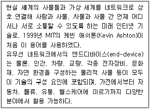
- 센싱(Sensing)
- 크롤링(Crawling)
- 사물인터넷(Internet of Things)
- 웹로봇(Web Robot)
- O2O(Online to Offline)
(정답률: 62%)
89. 고객을 관리하기 위해 고객정보를 분석하는데 활용되는 데이터 마이닝 기법과 그 내용으로 가장 옳지 않은 것은?
- 연관성분석 - 데이터 안에 존재하는 품목간의 연관성 규칙 발견
- 회귀분석 - 하나의 종속변수가 설명(독립)변수들에 의해서 어떻게 설명 또는 예측되는지를 알아보기 위해 변수들 간의 관계를 적절한 함수식으로 표현하는 통계적 방법
- RFM 모형 - 고객의 수익기여도를 나타내는 세가지 지표(최근성, 구매성향, 구매횟수)들을 각 지표별 기준으로 정렬하여 점수화 하는 방법
- 군집분석 - N개의 개체들을 대상으로 P개의 변수를 측정하였을 때 관측한 P개의 변수값을 이용하여 N개 개체들 사이의 유사성 또는 비유사성의 정도를 측정하여 개체들을 가까운 순서대로 군집화하는 통계적 분석방법
- 의사결정나무 - 의사결정규칙을 나무구조로 도표화하여 분류와 예측을 수행하는 분석방법
(정답률: 32%)
90. 이쿠지로 노나카(Nonaka)의 지식전환 프로세스 중, 개인이 생각하고 있는 아이디어나 지식인 암묵지를 글이나 도표의 형태인 형식지로 표현해 나가는 프로세스로, 지식을 표현하는 과정에서 기존 지식에 대한 새로운 발견을 할 가능성이 큰 프로세스를 무엇이라 하는가?
- 내재화(Internalization)
- 결합화(Combination)
- 외재화(Externalization)
- 정당화(Justifying)
- 사회화(Socialization)
(정답률: 55%)